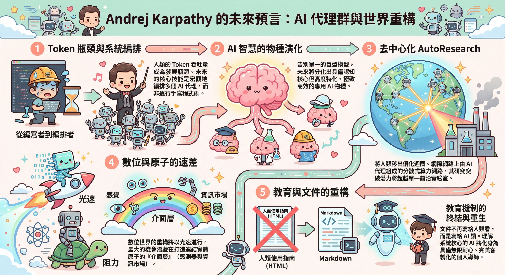

The End Of Coding
AI Agents 的未來：邁向 Loopy 時代的深度洞察與戰略啟示
AI 浪潮下的產業變革與個人定位
No Priors Podcast｜主持人 Sarah Guo 專訪 Andrej Karpathy，聚焦 AI Agents、研究自動化與工作型態轉變。
A. 基本資訊
- 訪談場次/主題： The End of Coding: Andrej Karpathy on Agents, AutoResearch, and the Loopy Era of AI
- 頻道： No Priors: AI, Machine Learning, Tech, & Startups（6.81 萬訂閱者）
- 訪談日期： 2026年3月20日
- 觀看次數： 316,780 次
- 形式： YouTube Podcast
- 影片連結： youtube.com/watch?v=kwSVtQ7dziU
- 核心問題： AI Agent 的崛起如何重塑個人生產力、軟體工程，以及未來的 AI 研究與產業發展模式？在 AI 快速發展的時代，個人與組織如何適應、轉型，並找到自身定位？
說話者對照表
| 角色/職稱 | 姓名/代碼 | 組織 |
|---|---|---|
| 主持人 | Sarah Guo | No Priors Podcast（Conviction 創始人） |
| 講者 | Andrej Karpathy | 前 Tesla AI 總監、OpenAI 創始成員，知名 AI 研究者 |
專有名詞表
| 專有名詞 | 英文/原文 | 說明 |
|---|---|---|
| AI Agent | AI Agent | 能自主執行任務、具備一定決策能力的 AI 程式。 |
| Loopy Era | Loopy Era | 指 AI Agent 進入一個可重複、自主迭代、循環優化的階段。 |
| Claw | Claw | Karpathy 用來比喻 AI Agent 的一種具體形式，強調其執行與操作能力。 |
| Psychosis | Psychosis | Karpathy 用以形容 AI 快速發展帶來的身心極度興奮、專注與焦慮的狀態。 |
| Auto Research | Auto Research | 一種由 AI 自動進行研究、實驗與模型優化的方法。 |
| Program MD | Program MD | Karpathy 提出的，用 Markdown 描述研究組織運作模式的文件。 |
| Speciation | Speciation | 指 AI 模型朝向特定領域或任務專精化的現象。 |
| Agent | Agent | 在 AI 領域，指能自主執行任務的軟體實體。 |
| AI psychosis | AI psychosis | 指 AI 研究者在深入研究 AI 時，可能因高度專注而產生的心理狀態。 |
| Jevons paradox | Jevons paradox | 當某資源使用效率提升後，反而導致該資源的總體消耗增加的現象。 |
| Frontier labs | Frontier labs | 指在 AI 研究前沿，擁有頂尖技術與資源的研究機構。 |
| LLM | Large Language Model | 大型語言模型，例如 GPT-3、GPT-4 等。 |
| Open source | Open source | 開源軟體，程式碼公開，任何人皆可使用、修改與分發。 |
| Superorganism | Superorganism | 指由眾多個體組成、具備整體智慧與功能的複合體，此處暗指人類社會。 |
影片章節
| 時間 | 主題 |
|---|---|
| 00:00 | Andrej Karpathy 介紹 |
| 02:55 | 模型能力的現有瓶頸 |
| 06:15 | Coding Agents 的精通之道 |
| 11:16 | 自然語言編程的二階效應 |
| 15:51 | 為何推動 AutoResearch |
| 22:45 | AI 時代的關鍵技能 |
| 28:25 | 模型物種分化（Model Speciation） |
| 32:30 | 打造人類與 AI 協作介面 |
| 37:28 | 就業市場數據分析 |
| 48:25 | 開源 vs 閉源模型 |
| 53:51 | 自主機器人 |
| 1:00:59 | MicroGPT 與 Agentic 教育 |
| 1:05:40 | 結語 |
導覽索引
主持人：Sarah Guo
摘要
主持人是一位敏銳的引導者，他能精準捕捉 Karpathy 的關鍵思維，並將其轉化為可理解的社會現象或使用者體驗。他關注 AI Agent 對個人日常、工作流程的改變，以及技術進步帶來的潛在社會影響。同時，他引導對話觸及職場市場、技能發展，以及 AI 產業的宏觀趨勢，並對開放原始碼（Open Source）與封閉模型（Closed Models）的生態系平衡表達關注重點。
核心論點與分析
觀察 AI Agent 的日常應用與使用者心境
主持人深刻體察到 AI Agent 正在改變人們的工作模式，從「寫程式」轉變為「表達意願給 Agent」。他引用 Karpathy 的「AI Psychosis」現象，反映出快速技術迭代帶來的興奮與焦慮感，以及個人如何快速適應並追求效率極大化的趨勢。他將 Karpathy 的個人經驗（如 Dobby the elf claw）連結到更廣泛的「超乎想像的」使用者體驗，並探討這是否是使用者真正想要的軟體形態。
「Well, if you're nervous, the rest of us are nervous. We have a uh we have a team that we work with at conviction that their setup is everybody is like, you know, none of the engineers write code by hand and they they're all microphoned and they just like whisper to their agents all the time. It's the strangest work setting ever. Uh, and I thought they were crazy and now I like I fully accept I was like, "Oh, this was the way." Like you're just ahead of it.」 [00:11:55] - 分析：主持人在此展現了其觀察力，他不僅記錄了 Karpathy 的個人體驗，更將其延伸到他所知的其他團隊，驗證了 Karpathy 所描述的 AI Agent 應用已非個案，而是正在形成的趨勢。他從「質疑」到「接受」的心態轉變，也反映了社會對於 AI 影響的普遍認知變化。
聚焦 AI 發展對就業市場的影響
在訪談末段，主持人將話題轉向 AI 對就業市場的影響，這是一個高度關聯社會切身利益的議題。他引用 Karpathy 的工作（jobs data analysis），顯示他關注技術發展如何實際轉化為對個人職業生涯的衝擊，以及新興職業的可能性。他同時也引導對話觸及目前工程師職缺的持續增長現象，試圖探究其背後的原因，是短期現象抑或長期趨勢。
「We need a lot of healthcare workers.」 [00:57:36] - 分析：這句看似簡單的結論，實際上是主持人對於 Karpathy 關於就業數據分析的延伸和回應。它點出了在 AI 趨勢下，某些特定領域（如醫療保健）對人力需求的確定性，並為聽眾提供了一個相對穩定的預測方向，巧妙地為訪談畫下一個與現實緊密連結的句點。 「Um I I can't tell if that's like a temporary phenomenon. I'm not sure how I feel about it yet. Do you know? [00:02:30]」 - 分析：此處主持人對工程師職缺的質疑，反映了對 AI 可能帶來的結構性變化的擔憂，並試圖從專家角度獲得更深入的解析，探討這種需求的持續性。
探討 AI Agent 的用戶體驗與軟體產業的未來
主持人對 Karpathy 的 Dobby 居家自動化案例印象深刻，並以此引導至對軟體產業結構的思考。他質疑現有的 App 模式是否過時，以及是否應該走向更 API-centric、由 Agent 驅動的未來。他提出的「人們真的想要我們今天所有的軟體嗎？」詰問，直指 AI 時代對既有軟體生態的顛覆性挑戰。
「Do people really want all the software that we have today? ... Right. Um, because I I would argue like well you have the hardware but you've now thrown away the software or the the UX layer of it. Um, do you think that's what people want?」 [00:29:05] - 分析：這是主持人深層次的問題，他將 Karpathy 的個人案例提升到產業層面，挑戰了現有的以 App 為中心的軟體設計理念。他預見了 Agent 作為「膠水」整合各種 API 的可能性，暗示了對未來軟體架構的顛覆。
AI 產業生態系的觀察
主持人對 AI 產業的封閉與開放模型之間的競合關係，以及開放原始碼在 AI 發展中的角色與持續性，展現出高度興趣，並試圖從 Karpathy 的視角理解其發展潛力與影響。
「Um, I don't know if you're surprised by that but you're a long-term contributor to open source. Like what's your prediction here? [00:14:10]」 - 分析：此處為主持人引導 Karpathy 針對開放原始碼 AI 模型發展的提問，結合了他對開放原始碼的長期投入，旨在獲取其對產業生態系未來走向的判斷。
機器人領域的未來展望
針對汽車自動駕駛的經驗，主持人詢問在當前機器人技術加速發展的背景下，通用機器人自主性是否會實現，並關心其發展的時程與潛力。
「Could you do your work from home though? [00:01:10]」 - 分析：此問題直接連結到 AI 工具對工作模式的影響，並引導 Karpathy 討論遠端工作與數位內容處理的關聯性，為後續關於數位工作者受影響的討論鋪墊。
關鍵引言
「Well, if you're nervous, the rest of us are nervous. We have a uh we have a team that we work with at conviction that their setup is everybody is like, you know, none of the engineers write code by hand and they they're all microphoned and they just like whisper to their agents all the time. It's the strangest work setting ever. Uh, and I thought they were crazy and now I like I fully accept I was like, "Oh, this was the way." Like you're just ahead of it.」 [00:11:55] - 分析：此引言展現了主持人對於 AI Agent 影響力的敏感度，他能將 Karpathy 的個人經驗與更廣泛的工程實踐連結，並表達了對這種「奇特」工作模式從懷疑到認同的心路歷程，突顯了技術變革的快速與顛覆性。
「Do people really want all the software that we have today?」 [00:29:05] - 分析：這是主持人對現有軟體產業模式的核心質疑。藉由 Karpathy 的 Dobby 案例，他挑戰了 App 為中心的 UX 設計，預示了 Agent 驅動的未來，並引發了聽眾對軟體本質的思考。
「We need a lot of healthcare workers.」 [00:57:36] - 分析：在討論完 AI 的廣泛影響後，主持人敏銳地抓住了 Karpathy 對就業市場數據的分析，並從中提煉出一個具體、具有社會價值和確定性的結論，為訪談的結尾提供了明確的社會面向。
現況總結
- 核心洞見：AI Agent 不僅是工具的升級，更是工作流程、使用者體驗及軟體產業結構的根本性變革。從個人生產力到產業生態，AI Agent 的崛起正在重塑我們與數位世界的互動方式。AI 技術的進步不僅是工具的革新，更是對現有產業結構、工作模式與個人技能的深層重塑。開放原始碼與封閉模型的長期共存，以及機器人技術的發展，是 AI 生態系未來演進的關鍵面向。
- 對個人的意義：應持續關注 AI 工具的發展，並思考自身技能如何與這些工具結合，而非被其取代。技能的提升應側重於數位內容處理、跨領域整合，以及與 AI 協作的能力。必須積極學習如何與 AI Agent 協作，掌握「macro actions」的規劃能力，並將個人價值從編寫程式轉移到策略規劃與問題定義。
- 對組織/決策者的意義：必須重新思考軟體產品的設計理念，從以 App 為中心轉向以 Agent 為中心，並積極探索 Auto Research 等自動化研究方法，以應對快速變化的技術格局。需評估 AI 對現有營運模式的潛在影響，並積極探索 AI 應用於提高效率、創新產品與服務的機會。同時，需關注 AI 產業生態系的演變，尤其是在開放與封閉模式間的平衡，以制定長遠發展策略。應加速探索 AI 在數位領域的應用，以提升營運效率和創新能力。同時，要重視開放原始碼 AI 的發展，並思考如何將其納入組織的技術戰略，以應對潛在的中心化風險。
- 需要保留的判斷：AI Agent 的「Loopy Era」的實現仍需克服模型「Jaggedness」（參差不齊）的問題，且其有效性高度依賴於可量化的評估指標。AI 對勞動市場的長期影響仍具不確定性，需持續觀察供需彈性、新興職業的出現等因素。工程師職缺的增長也可能受到短期因素影響。對於機器人等物理世界的應用，應有更長遠的規劃和更務實的預期。
Andrej Karpathy
摘要
Andrej Karpathy 認為，AI Agent 的發展已達到一個關鍵轉折點，從「寫程式」的時代進入「表達意願」並由 Agent 執行的時代。他將這種劇變形容為「AI Psychosis」，並強調個人生產力的極大化與「技能問題」(skill issue) 的重要性。他推動了 Auto Research 的概念，預示著 AI 將能自主進行研究與優化，並將未來的 AI 組織架構設想為可被程式化的「Program MD」。他對 AI 的「Jaggedness」（參差不齊）現象的觀察，為我們理解當前模型的局限性提供了重要視角。同時，他預測，AI 的發展將主要集中在數位領域，因為其處理速度與複製能力遠超物理世界。這種數位能力的躍升將重塑數位內容處理相關的職業，而非必然減少工作機會，而是改變工作內容。
核心論點與分析
AI Agent 的「Loopy Era」與生產力爆炸
Karpathy 認為，自 2023 年底以來，AI Agent 的能力有了「巨大躍升」，使得個人從 80/20 的自行編寫程式轉變為 20/80 的代理任務，甚至已不再親自敲打鍵盤。他將這種狀態形容為「AI Psychosis」，反映了這種改變的巨大衝擊與個人的沉浸感。他將此比喻為「Loopy Era」，意指 AI Agent 進入了一個可自主、循環優化、並能大規模執行的階段。這種轉變的核心是「將自己從瓶頸中移除」，透過 Agent 放大個人影響力，並不斷追求更高的「token throughput」。
「I kind of went from 8020 of like you know uh to like 2080 of writing code by myself versus just delegating to agents. And I don't even think it's 2080 by now. I think it's a lot more than that. I don't think I've typed like a line of code probably since December basically.」 [00:07:01] - 分析：這句話精準地量化了 AI Agent 帶來的生產力爆炸。它不再是輔助工具，而是成為執行任務的主要驅動力。此論點的前提是模型能力已達到足夠的成熟度，能夠理解並執行複雜指令，且使用者已找到合適的 Prompting 與協作方法。 「The agent part is now taken for granted. Now the claw-like entities are taken for granted and now you can have multiple of them and now you can have instructions to them and now you can have optimization over the instructions.」 [00:03:53] - 分析：Karpathy 在此清晰地描繪了 AI Agent 的發展路徑。從單一 Agent 到多個 Agent 的協作，再到對指令的優化，這是一個不斷疊加的複雜化過程。這意味著，未來對 Agent 的「操控」將演變成對 Agent 群體的「管理」與「協調」，這對使用者提出了更高的策略性思維要求。
「技能問題」(Skill Issue) 的重要性與 macro actions
Karpathy 強調，當 AI Agent 無法達成預期時，問題往往不在於 AI 能力本身，而在於使用者自身的「技能問題」，包括指令的精確性、記憶工具的設計、Agent 間的協調等。他提出了「macro actions」的概念，將任務單位從單行程式碼提升到整個功能的實現。這種轉變意味著，未來成功的軟體開發者不再是程式碼的書寫者，而是能夠駕馭多個 Agent 完成複雜任務的「策略規劃師」和「協調者」。
「It all kind of feels like skills when it doesn't work to some extent. You want to see how you can paralyze them etc. And you want to be Peter Steinberg basically. So Peter is famous. He has a funny photo where he's in front of a monitor with lots of uh like uh he uses codecs. So lots of codecs agents styling the the monitor and they all take about 20 minutes if you prompt them correctly and you use the high effort. And so they all take about 20 minutes. they have multiple, you know, 10 repos checked out and so he's just um going between them and giving them work. It's just like you can you can you can move in much larger macro actions. It's not just like here's a line of code, here's a new function. It's like here's a new functionality and delegate it to agent one.」 [00:13:56] - 分析：Karpathy 藉由 Peter Steinberg 的例子，具體展現了「macro actions」的操作模式。這不僅是指令的層級提升，更是思維模式的轉換，從微觀的程式碼操作轉向宏觀的功能設計與分配。此論點成立的前提是 Agent 能夠理解並執行跨越多個程式碼庫的複雜任務，且使用者能有效地規劃這些「macro actions」的順序與依賴關係。
Dobby the Elf Claw：Agent 驅動的個人化生活與對軟體產業的挑戰
Karpathy 分享了 Dobby，一個控制他家自動化系統的 AI Agent，透過自然語言管理燈光、空調、安保等。這個案例強烈地展現了 Agent 如何將多個獨立的軟體應用整合為一個統一的、個人化的互動體驗。他認為，這可能預示著對現有「過度生產」的獨立 App 的顛覆，未來軟體生態應更側重於 API 的開放與 Agent 的協作，而非眾多零散的應用程式。
「So basically like it kind of hacked in, figured out the whole thing. Uh created APIs, created a dashboard so I could see the command kind of center of like all of my lights in the home. And then it was like switching lights on and off. And you know, so I can ask it like Dobby at sleep time. And when it's sleepy time, that just means all the lights go off, etc. and so on. So, it controls all of my lights, my HVAC, my shades, uh the pool and uh spa and also my security system.」 [00:24:17] - 分析：Dobby 的案例是 AI Agent 整合能力的絕佳範例。它從零開始，透過網路掃描、API 串接，最終實現了對家中多個子系統的統一控制。此成功的關鍵在於 Agent 的探索、學習與執行能力，以及底層系統的開放性 API。這挑戰了傳統軟體設計中，複雜功能需要透過多個 App 組合的模式。
Auto Research：AI 自主優化與研究的新紀元
Karpathy 提出了「Auto Research」的概念，旨在透過 AI 自動進行模型訓練與優化，將研究者從瓶頸中解放出來。他以自身訓練 GPT-2 的經驗為例，AI Agent 發現了他未能察覺的超參數調優，證明了 AI 在優化方面的潛力。他認為，未來的 AI 研究將朝向「移除人類研究者」的方向發展，由 Agent 根據目標、指標和邊界自動進行實驗與迭代，這將極大加速科學發現的進程。
「The name of the game is how can you get more agents running for longer periods of time without your involvement doing stuff on your behalf and auto research is just yeah here's an objective here's a metric here's your boundaries of what you can and cannot do and go and uh yeah」 [00:42:45] - 分析：Karpathy 在此清晰地定義了 Auto Research 的核心理念：解除人類的限制，讓 AI 具備自主性。這意味著 AI 將從單純的工具轉變為研究的合作者甚至主導者。此論點成立的前提是，AI 能夠理解研究目標，並能有效地將其分解為可執行的實驗步驟，同時具備自我評估與修正的能力。 「I was surprised that it um it found these things that I you know the repo is already fairly well tuned and still found something. And that's just a single it's a single loop like these frontier labs they have GPU clusters of tens of thousands of them. And so it's very easy to imagine how you would basically get a lot of this automation on um smaller models and fundamentally everything around like frontier level intelligence is about extrapolation and scaling loss and so you basically do a ton of the exploration on the smaller models and then you try to um extrapolate out.」 [00:46:31] - 分析：Karpathy 結合自身經驗，強調了 Auto Research 的超預期效果。即使是相對成熟的專案，AI 仍能發現新的優化方向。他進一步將此概念擴展到大規模 AI 研究機構，指出透過在小模型上進行廣泛的自主探索，再進行外推，是加速前沿 AI 發展的關鍵。
Program MD 與 AI 組織結構的未來
Karpathy 設想，未來的研究組織可以被「程式化」，用 Markdown 文件（Program MD）來描述其運作流程、角色與協作方式。這種將組織結構視為可編輯程式碼的觀念，徹底顛覆了傳統的組織管理思維。他認為，不同的 Program MD 會產生不同的研究效率與風險偏好，這為「元優化」（meta-optimization）開闢了道路，即 AI 可以進一步優化研究組織本身的設計。
「So program MD is my crappy attempt at describing like how the auto researcher should work like oh do this then do that and that and then try these kinds of ideas and then here's maybe some ideas like look at architecture look at optimizer etc. I just came up with this in markdown, right? ... And so you can so one organization can have fewer stand-ups, one organization can have more uh one organization can be very risk-taking, one organization can be less. And so you can definitely imagine that you have multiple research orgs. Um, and then they all have code and once you have code, then you can imagine tuning the code.」 [00:48:14] - 分析：Karpathy 的 Program MD 概念是一個革命性的想法，它將組織管理邏輯化、代碼化。這意味著組織的效率和特性不再是抽象的概念，而是可以通過編寫程式來定義和優化。此論點的潛在條件是，人類能夠將複雜的組織動態抽象為可執行的規則，並且 AI 能夠理解和遵循這些規則，甚至進行優化。
AI 的「Jaggedness」現象與未來發展瓶頸
Karpathy 指出，當前的 AI 模型呈現出一種「Jaggedness」（參差不齊）的特徵，它們在某些領域（如程式碼生成）表現出極高的智慧，但在其他領域（如講笑話、理解細微語意）卻顯得笨拙，甚至不如數年前的模型。他將此歸因於模型的訓練方式（如強化學習在可驗證領域的優勢）與數據的限制。他認為，這種「Jaggedness」是當前 AI 發展的瓶頸，並暗示著未來可能需要更多「物種形成」（speciation），即模型走向專精化，而非追求單一萬能模型。
「I simultaneously feel like I'm talking to an extremely brilliant PhD student who's been like a systems programmer for their entire life and a 10-year-old. It's so weird because humans like there's I feel like they're a lot more coupled. Like you have, you know, um everything This jaggedness is really strange and humans have a lot less of that kind of jaggedness. Although they definitely have some, but humans have a lot more jaggedness. uh sorry the agents have a lot more jaggedness where uh sometimes like you know I ask for functionality and it like comes back with something that's just like totally wrong and then we get into loops that are totally wrong and then I'm just I get so frustrated with the agents all the time still because you feel the power of it but you also there's still like it does nonsensical things once in a while for me still as well」 [00:54:05] - 分析：Karpathy 精準捕捉了當前大型語言模型最令人困惑的特徵之一。這種「PhD 學生」與「10 歲兒童」並存的表現，揭示了模型的訓練方式與實際智能之間可能存在的鴻溝。這種「Jaggedness」的根本原因在於，模型在可量化、可驗證的任務上表現突出，但在缺乏明確評估標準的領域則表現不穩定。
數位領域的指數級成長與物理世界的滯後
Karpathy 預測，AI 的主要衝擊將會發生在數位空間，因為數位資訊的複製和處理速度以光速進行，遠超物理世界的物質加速。這意味著大量現有的數位工作，如資訊處理、編寫程式碼等，將迎來大規模的「解除瓶頸」(unbottlenecking)，效率大幅提升。他強調，這不必然導致職缺減少，而是工作內容的轉變。相對而言，物理世界的發展，如機器人技術，將因其固有的複雜性和成本，發展速度相對較慢，但其總體市場潛力依然巨大。
「So energetically I just think we're going to see a huge amount of activity in digital space, huge amount of rewriting, huge amount of activity boiling soup and I think the we're going to see something that that in the digital space goes at the speed of light compared to I think what's going to happen in the physical world to some extent if would be the extrapolation. [00:00:41]」 - 分析：此引言直接點出 Karpathy 對於 AI 發展重點的判斷。他將數位與物理世界的處理速度進行對比，強調數位空間的指數級成長潛力，為後續討論數位工作受影響以及物理世界發展滯後奠定基礎。
AI 作為「神經系統升級」與個人技能的演進
他將 AI 視為人類「超個體」(superorganism) 的神經系統升級，認為這將根本性地改變數位資訊的處理方式。對於個人而言，最重要的不是抵觸或恐懼 AI，而是學習跟上其發展，將 AI 視為強大的賦權工具，利用它來增強現有任務的執行效率。他認為，即使是複雜的工程師職位，其核心也是由一系列任務組成，AI 工具將極大化提升這些任務的執行速度。
「Um, but the physical world is actually going to be like I think um behind that by some amount of time. And so I think what's really fascinating to me is like so that's why I was highlighting the the professions that fundamentally manipulate digital information. This is work you could do from your home etc. because I feel like those will be like things will change and it doesn't mean that there's going to be less of those jobs or more of those jobs because that has to do with like demand elasticity and many other factors but things will change in these professions because of these new tools and um because of this upgrade to the nervous system of the human superorganism if you want to think about it that way. [00:01:00]」 - 分析：此處 Karpathy 將 AI 視為人類「超個體」的神經系統升級，並連結到數位工作者將受到的影響。他明確指出，重點在於「改變」而非「增減」工作機會，這為聽眾理解 AI 對職場的實際衝擊提供了更細緻的視角。 「So if the barrier comes down then actually you have the Jevans paradox which is like you know you actually the demand for software actually goes up. It's cheaper and there's more more [00:02:45]」 - 分析：此引言引入了 Jevons paradox 的概念，用以解釋為何 AI 降低了軟體開發的門檻後，反而可能增加對軟體的需求。這是一種深刻的經濟學視角，闡釋了技術進步如何創造新的市場空間。
開放原始碼在 AI 生態系中的關鍵角色與權衡
Karpathy 強烈支持開放原始碼 AI 模型。他認為，過度依賴少數封閉的「邊緣運算」(frontier) 實驗室，存在嚴重的中心化風險，歷史經驗表明，這種中心化往往帶來負面後果。開放原始碼提供了一個更為健康、分散式的生態系，即使其模型能力略微落後於最尖端封閉模型，也能滿足絕大多數的「消費級」應用場景，並為整個產業提供一個相對安全、可信賴的共同平台。他預計，這種「封閉前沿」與「稍有延遲的開放源」之間的動態關係將持續存在，並認為這是目前 AI 生態系相對「理想」的狀態。
「I I do think that the current models are very good. The other thing that I think is like really interesting is that for the vast majority of like consumer use cases and things like that even term open source models are actually quite good I would say and I think like if you go forward like more uh more years it does seem to mean like a huge amount of like simple use cases are going to be well covered and actually even run locally. [00:16:10]」 - 分析：這是 Karpathy 對開放原始碼 AI 模型能力的肯定，他認為這些模型已能滿足大多數消費級應用。這點對於判斷開放原始碼在 AI 生態系中的角色，以及其與封閉模型的長期共存關係至關重要。 「And I think that that's uh you know centralization has a very poor track record in my view in in the past and has [00:19:40]」 - 分析：此處 Karpathy 鮮明地表達了他對 AI 過度中心化的擔憂，並引用歷史經驗來支持他的觀點。這直接導向了他對開放原始碼重要性的論述，並形成了其對 AI 生態系平衡的關鍵主張。
機器人技術的挑戰與機會
基於在自駕車領域的經驗，Karpathy 認為機器人技術的發展面臨巨大的挑戰，包括龐大的資本投入、漫長的開發週期以及固有的物理世界複雜性。他將自駕車視為機器人的早期應用，並預計其他機器人應用也會面臨類似的瓶頸。然而，他也指出，數位 AI 能力的提升將加速與物理世界的互動介面，例如感測器和致動器，這將催生出許多創新的機會，尤其是在「數位與物理介面」領域。
教育模式的革新與「代理人」的角色
Karpathy 認為，AI 的進步將深刻改變教育模式。他以其「micro GPT」專案為例，強調當前的重點已不再是直接向人類解釋複雜概念，而是將這些概念「教給代理人」(teach agents)。代理人能夠以無限的耐心和個性化的方式，向人類學習者傳達資訊。因此，未來的教育者應專注於創造能夠指導代理人學習的「技能」(skills) 或「課程」(curriculum)，而那些代理人難以自行產生的核心洞見或關鍵概念，則成為人類貢獻的獨特價值所在。
「Um, and so I think uh education is going to be kind of like reshuffled by this quite substantially where it's the end of like teaching each other things almost a little bit like if I have a um library for example of code or something like that it used to be that you have documentation for other people who are in my user library but like you shouldn't do that anymore like you should have instead of HTML documents for humans you have markdown documents for agents because if agents get it then they can just explain all the different parts of it. [00:27:40]」 - 分析：此引言揭示了 Karpathy 對教育未來發展的預測。他認為，教育的重心將從人對人的直接傳授，轉變為訓練 AI 代理人，再由代理人完成個體化的教學任務。這是一個極具前瞻性的觀點，預示著學習方式的根本性變革。
關鍵引言
「I don't think I've typed like a line of code probably since December basically.」 [00:07:01] - 分析：這句話是 Karpathy 個人體驗中最具體、最震撼的數據點，它直接量化了 AI Agent 對個人工作模式的顛覆程度，從「程式碼寫作者」轉變為「任務委派者」。
「The agent part is now taken for granted. Now the claw-like entities are taken for granted and now you can have multiple of them and now you can have instructions to them and now you can have optimization over the instructions.」 [00:03:53] - 分析：Karpathy 在此總結了 AI Agent 的多層次發展：從單一實體到多實體協作，再到對協作指令的優化。這預示了未來 Agent 交互的複雜度將不斷提升，對使用者提出了更高的策略與管理要求。
「Auto research is just yeah here's an objective here's a metric here's your boundaries of what you can and cannot do and go and uh yeah」 [00:42:45] - 分析：這句話濃縮了 Auto Research 的核心思想——透過清晰的目標、指標和限制，實現 AI 的自主研究。這意味著 AI 的角色從執行者轉變為研究的發動者與優化者，將極大加速科學進步。
「I simultaneously feel like I'm talking to an extremely brilliant PhD student who's been like a systems programmer for their entire life and a 10-year-old.」 [00:54:05] - 分析：這是 Karpathy 對當前 AI 模型「Jaggedness」現象最生動的描繪。它揭示了 AI 智能發展的不均衡性，以及在特定領域的強大能力與普遍認知能力的巨大反差。
現況總結
- 核心洞見：AI Agent 的發展正開啟一個「Loopy Era」，個人生產力將因 Agent 的自主執行與協作而呈爆炸式增長。未來的關鍵在於「技能問題」，即如何高效地指導和協調 Agent 完成複雜任務。同時，AI 的「Jaggedness」現象提示我們，目前 AI 的智能發展尚不均衡，專精化（speciation）和更精準的評估方法將是未來發展的重點。AI 的驅動力將主要來自數位世界的效率躍升，這將重塑數位工作，而非簡單地減少工作崗位。開放原始碼 AI 的發展是避免潛在中心化風險、確保生態系健康平衡的關鍵。機器人技術雖然潛力巨大，但發展節奏將慢於數位 AI，並可能從數位與物理世界的互動介面中獲益。教育模式將因 AI 代理人的出現而面臨根本性轉變。
- 對個人的意義：應積極擁抱 AI 工具，將其視為提升個人數位工作效率的賦權工具。培養與 AI 協作的能力，並關注那些 AI 難以直接取代的、需要深刻洞見或創造力的領域。理解並學習如何與 AI 代理人互動，將成為未來重要的技能。
- 對組織/決策者的意義：應將 AI Agent 視為組織的新核心，重新設計工作流程，並積極探索 Auto Research 等自主優化方法。同時，理解 AI 的「Jaggedness」現象，為特定應用場景設計更合適的 AI 解決方案，而非追求單一通用模型。
- 需要保留的判斷：AI Agent 的潛力巨大，但其有效性很大程度上取決於使用者的「技能問題」。Auto Research 的發展，尤其是在缺乏明確量化指標的領域，仍面臨挑戰。AI 的「Jaggedness」預示著通用智能的實現仍需時日。AI 對就業市場的長期影響仍需持續觀察，儘管 Karpathy 提出「改變而非減少」的觀點，但實際的供需彈性與新興職位的出現速度仍是未知數。機器人技術的具體突破時程與市場規模，亦需進一步的數據佐證。
【關鍵字】
AI Agent, Loopy Era, Psychosis, Skill Issue, Macro Actions, Auto Research, Program MD, Jaggedness, Speciation, Productionity, Automation, Research, Digital Transformation, Open Source, Job Market, Robotics, Future of Work, Education, Agent, Physical World, Digital Space
【Mermaid 圖表】
圖表 1：AI Agent 的演進與協作流程
說明：此圖展示了 AI Agent 從單一實體到複雜系統的演進路徑，以及其核心能力（協作、指令優化、Macro Actions）如何驅動「Loopy Era」的出現，並進一步延伸至自主研究與組織結構的革新。
圖表 2：AI 影響架構圖
說明：此圖表描繪了 AI 發展對數位與物理領域的影響，以及由此衍生的個人技能演進、產業生態系（開放原始碼）和教育模式的變革。
深度解讀：9 段分析與 3 大洞見
以下整理自研究 AI 前沿者的角度，對這場訪談的完整分析。
整體摘要
這場訪談的核心，不是在說「AI 會不會寫程式」，而是在說：人類工作的基本單位正在改變。Karpathy 認為，程式開發、研究、工具使用，甚至未來的資料蒐集與實體世界互動，都正在從「人手動一步步操作」轉向「人設計目標、邊界與評估，讓 agent 長時間自行運作」。
他真正興奮的，不只是模型變聰明，而是整個工作流被重構：從單一對話式 agent，走向多 agent 協作、持續運行的 claw、具備記憶與個性的代理系統，再走向 auto research、meta optimization、甚至讓網際網路上的不可信算力也能參與研究。
但他也沒有盲目樂觀。訪談中反覆提醒：今天的模型仍然有明顯 jaggedness，不是在所有領域均勻進步；它們在「可驗證、有明確回饋」的任務上進展很快，在柔性、細膩、難量化的任務上仍然不穩定。這意味著未來真正稀缺的，不只是會下 prompt，而是會設計評估、分工、記憶、接口與安全邊界的人。
我的三個洞見
1. 人的價值，正從執行者轉向設計者。
AI 時代的人，不再主要待在執行閉環裡逐步操作，而是轉向負責目標定義、架構規劃、評估設計與邊界設定。真正有價值的，不只是做事，而是決定事情怎麼被做、怎麼被判定做得好不好。
2. AI 的強，不等於全面成熟。
AI 的能力進步更像是偏科強化：被明確訓練、可量化驗證的部分會快速變強，但這不代表其他能力也同步成熟。看到某些任務表現大幅提升，不能直接推論它已經在所有面向都同樣可靠。
3. 未來的軟體，將以 Agent 調度能力為核心。
未來軟體的重心，會從「讓人操作介面」逐漸轉向「讓 Agent 可調用能力」。各種可被 Agent 理解、授權、調配與執行的能力接口，會成為新一代數位系統的核心。
分段說明（研究 AI 前沿者的角度）
第一段：能力跳變，讓工程工作流整體改寫
Karpathy 描述的 capability jump，不是換了一套工具那麼簡單——它實際上是「人機分工模型」的根本改變。以前的瓶頸在打字速度、上下文切換、人工追蹤任務；現在的瓶頸變成你是否能把模糊需求分解成可並行、可驗證、可審查的 macro actions，讓 agent 接手執行。一般工程師可能還沒意識到工作流已經改變，但那些已經做到這件事的人，其實已經從 artisan 變成了 orchestrator。
第二段：從單一 agent 走向多 agent、claw、記憶與個性
Karpathy 對下一代 claw 的想像，不只是「更聰明的模型」，而是持續性、獨立 sandbox、長時間運作，以及更成熟的記憶系統——他甚至特別點出 personality 不是裝飾，而是影響合作感與效率的關鍵。這背後指向一個常被低估的事實：agent 的上限，不只由 base model 決定，也由「代理殼層」決定。記憶、角色設定、交互節奏，這些看似產品細節的東西，實際上是能力放大器。只盯模型分數、而不研究 persistent runtime 與 agent architecture 的研究者，可能正在錯過真正的系統能力提升。
第三段：Dobby 家庭自動化，指向 agent-first 的軟體未來
Karpathy 用 Dobby 說得很直接：Sonos、燈光、HVAC、泳池、安全系統，透過 WhatsApp 統一下指令，原本那六個 app 根本不應該存在——理想狀態是硬體暴露 API，agents 直接調用。這個生活案例背後，其實是一個很大的軟體產業轉向：從 app-first 走向 API-first / agent-first。若這個方向成立，未來很多產品的主要客戶，不再是直接點 UI 的人類，而是代表人類做事的代理；產品設計的核心，也不再是頁面流程，而是能不能安全暴露能力、能不能讓自然語言意圖穩定映射到 API。
第四段：auto research 的本質，是把研究者移出閉環
Karpathy 對 auto research 的定義很清楚：給定 objective、metric、邊界條件，讓系統自己迭代，而你從閉環中移出。他親自驗證過這件事——系統找到了他手調時沒看到的超參數組合。但這裡真正深遠的意涵，不只是「AI 幫你做研究」，而是 research process 本身被程式化了：他甚至把 research organization 抽象成一組 markdown 規則（Program MD），意思是研究團隊不再只是人員配置，而是可以被編碼、比較、優化的流程系統。
第五段：可驗證任務會先爆發，柔性任務仍然 jagged
Karpathy 對 auto research 的適用範圍說得很清楚：kernel 優化、訓練速度、validation loss，這些有明確 metric 的任務最適合；但他同時也點出一個重要警示——模型的能力不是均勻成長的。你可以讓它長時間完成複雜的 agentic 任務，它卻可能仍講不出更好的笑話，因為那不在 RL 強化的主航道上。在 verifiable domains 的飛躍，不能直接推論它在語意細膩度、價值判斷、澄清時機等軟任務也同步成熟。評估設計，因此將成為下一波真正的研究前沿。
第六段：speciation 可能比單一超大模型更合理
面對 jaggedness，Karpathy 認為讓所有智能都塞進一個大參數桶，並不是唯一解——未來應會出現更多 speciation：保留通用認知核心，再依任務做專精。當推理成本、延遲、特定任務的經濟性越來越重要時，專用模型、工具化專家、結構化多模型協作，可能反而比單一 oracle 更實用。未來的競爭，不一定只是誰的模型更大，而可能是誰的系統更分化、更可配置、更具經濟性。
第七段：從 auto research 到「internet swarm」
Karpathy 把 auto research 再往外推了一步：如果驗證便宜、搜尋昂貴，那麼大量不可信的外部算力就能參與研究——類似 SETI@home、Folding@home 的結構，全球分散的 agents 與算力形成一種協作式研究網。這裡最前沿的想法是：compute 本身將成為可直接捐獻的研究資源。今天多數人只能捐錢給機構；在這個想像裡，你可以直接貢獻算力給某個癌症研究或 LLM 自我改進計畫。真正的挑戰因此轉移到：如何安全執行、如何防作弊、如何低成本驗證、如何設計激勵機制。
第八段：就業、前沿實驗室、開源與治理
Karpathy 對職涯的態度很微妙：短期把 AI 視為強大的增能工具，中長期則坦承不確定。他對軟體需求相對樂觀——當軟體變便宜，需求反而可能因 Jevons paradox 上升；至於開源，他認為「閉源前沿 + 開源追趕」的張力本身，可能是一種健康的權力平衡。但這一段真正的深層主題，其實是技術、權力與知識壟斷：誰能決定未來方向？誰掌握第一手能力？誰可以公開說真話？若 intelligence 完全中心化，是否會成為制度性風險？這些問題，是前沿 AI 討論裡最容易被產品熱情掩蓋、卻最不該忽略的治理議題。
第九段：機器人、實體世界、資料市場，以及教育最後落點
Karpathy 認為數位世界會先被大幅重寫，實體世界因為 atoms 比 bits 難很多，會慢一拍——但真正巨大的長期市場，可能就在 physical interface，也就是 sensors 與 actuators。訪談最後談到 microGPT 與教育，把整場的論點收回到人的定位：代理、自動研究、分工、世界接口，都是在說系統能做什麼；而人最後仍要負責的，是系統還做不到的那一層——提煉本質、定義好問題、選擇關鍵抽象、把少數高價值 insight 注入系統。未來最值錢的，不是重複做模型已會做的事，而是提供模型還無法產生的結構化洞見。
最後總結
AI 前沿正在從「更會回答問題的模型」走向「能長時間、自主、可驗證地替人運作的系統」。
Karpathy 真正在描繪的未來：
- 軟體變成暫時性的、可即時生成的能力層
- 研究變成可程式化、可並行、可優化的閉環
- 開源與閉源共同構成權力平衡
- 數位世界先被重寫，之後才輪到實體世界
- 人類的核心價值，逐漸收斂到少數真正高階的 insight、抽象與判準設計上
所以，這篇不是在宣告「人沒用了」；相反地，它是在重定義：人要把自己放到哪一層，才不會成為系統裡最低效的那一層。